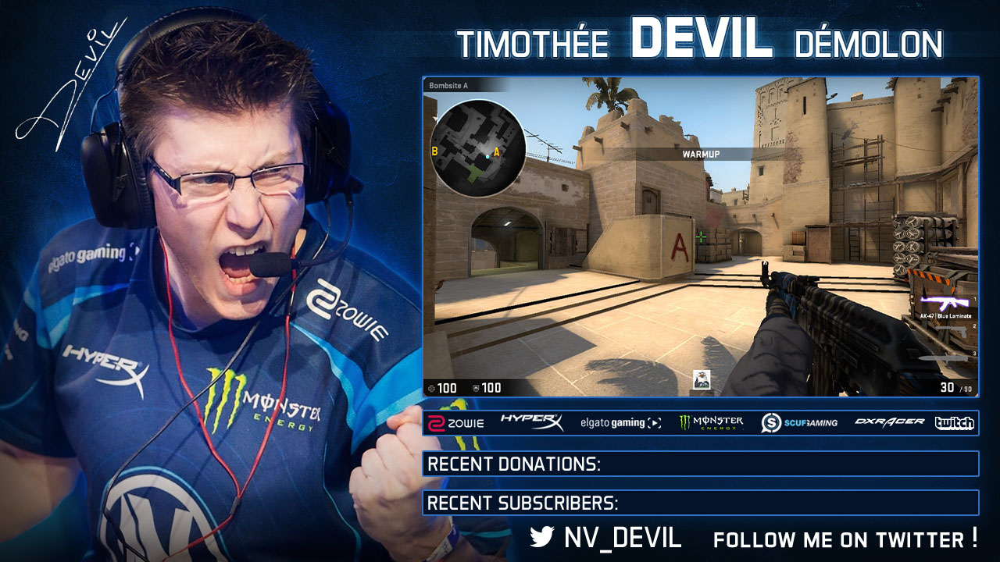

Arcelus Quentin
Portfolio
À propos
Contact
DEVIL
WEB
2016
Joueur professionnel sur Counter-Strike
- Réalisation d'un visuel diffusé lors de ses parties sur la plateforme Twitch.
- Conception d'une bannière pour son Twitter.
RETOUR AU PORTFOLIO
